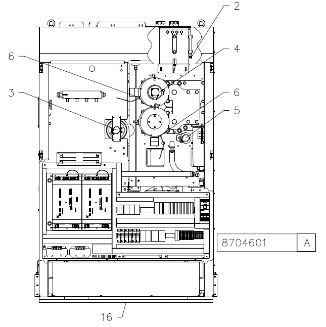
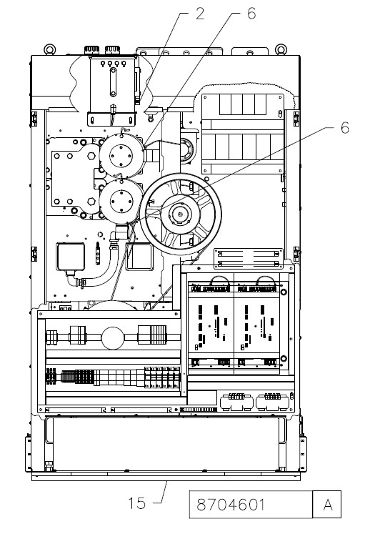
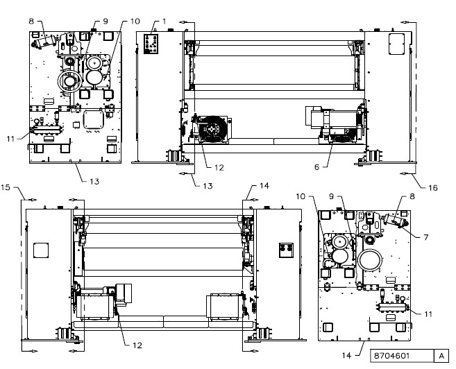

ELECTRICAL COMPONENTS (NOT ALL OPTIONS MAY BE PRESENT) |
||
|---|---|---|
Item |
Description |
Function |
1 |
Operator Station |
Contains all primary operator interfaces to operate the knife. |
2 |
Float Switch |
Senses the coolant level in coolant reservoir. Normal stop occurs if the coolant falls below a preset level. |
3 |
Pull Roll Motor Encoder |
Provides closed loop speed feedback for cylinder control. |
4 |
Cylinder Motor Resolver |
Provides closed feedback to cylinder drives. |
5 |
Cylinder Motor Encoder |
Provided closed loop feedback for cylinder control. |
6 |
Motor Temperature Switch |
Senses motor temperatures and causes a normal stop if motor temperature rises above a preset level. |
7 |
Nip Roll Proximity Switch |
Senses when the nip roll is fully raised or fully lowered. If the web wraps around the nip roll and raises the roll during normal running, a jam is assumed, and a normal stop will occur. |
8 |
Nip Roll Proximity Switch |
Senses when the nip roll is fully raised or fully lowered. If the web wraps around the nip roll and raises the roll during normal running, a jam is assumed, and a normal stop will occur. |
9 |
Cylinder Jam Detect Photoeye |
Senses paper jams occurring between the nip roll and the knife cylinders. A normal stop occurs if any of the photo eye beams are blocked. |
10 |
Doctor Blade Jam Detect Photoeye |
Senses when any of the webs have dropped below the outfeed doctor blade and have begun to accumulate. A normal stop occurs when photoeye is blocked. |
11 |
Cooling System Pressure Switch |
Senses pressure in the cooling system. If sensor fails to see 172 kPa (25 psi) or greater, the knife will not be allowed to run. |
12 |
Filter Switch |
Senses if motor coolant contaminants have clogged the filter element or if water has been added to the system. A normal stop will occur if input is received. |
13 |
Left Frame Inside View |
NA |
14 |
Right Frame Inside View |
NA |
15 |
Left Enclosure View |
NA |
16 |
Right Enclosure View |
NA |
* |
Denotes dual functionality of sensors. Mechanical configuration of machine will determine sensor function. |